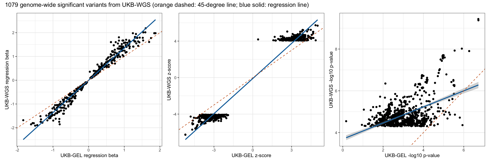
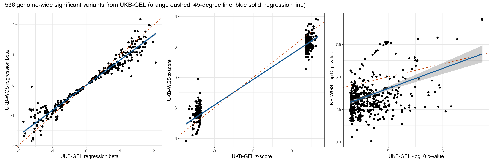
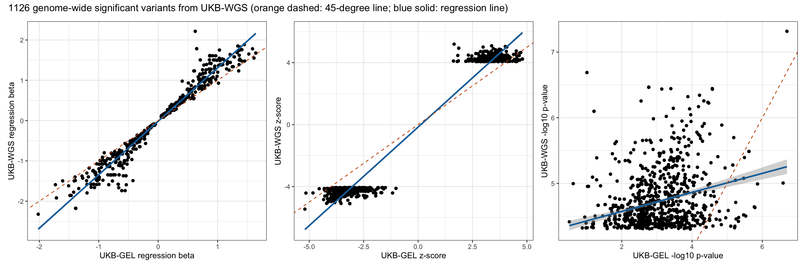
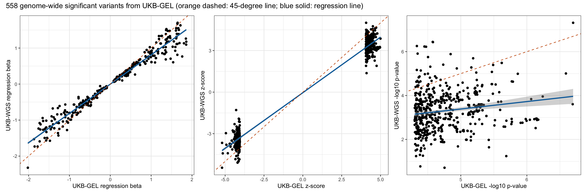

Last updated: 2025-07-27
Checks: 7 0
Knit directory: scratch/
This reproducible R Markdown analysis was created with workflowr (version 1.7.1). The Checks tab describes the reproducibility checks that were applied when the results were created. The Past versions tab lists the development history.
Great! Since the R Markdown file has been committed to the Git repository, you know the exact version of the code that produced these results.
Great job! The global environment was empty. Objects defined in the global environment can affect the analysis in your R Markdown file in unknown ways. For reproduciblity it’s best to always run the code in an empty environment.
The command set.seed(20250402) was run prior to running
the code in the R Markdown file. Setting a seed ensures that any results
that rely on randomness, e.g. subsampling or permutations, are
reproducible.
Great job! Recording the operating system, R version, and package versions is critical for reproducibility.
Nice! There were no cached chunks for this analysis, so you can be confident that you successfully produced the results during this run.
Great job! Using relative paths to the files within your workflowr project makes it easier to run your code on other machines.
Great! You are using Git for version control. Tracking code development and connecting the code version to the results is critical for reproducibility.
The results in this page were generated with repository version 76b90c8. See the Past versions tab to see a history of the changes made to the R Markdown and HTML files.
Note that you need to be careful to ensure that all relevant files for
the analysis have been committed to Git prior to generating the results
(you can use wflow_publish or
wflow_git_commit). workflowr only checks the R Markdown
file, but you know if there are other scripts or data files that it
depends on. Below is the status of the Git repository when the results
were generated:
Ignored files:
Ignored: .DS_Store
Ignored: .Rhistory
Ignored: .Rproj.user/
Note that any generated files, e.g. HTML, png, CSS, etc., are not included in this status report because it is ok for generated content to have uncommitted changes.
These are the previous versions of the repository in which changes were
made to the R Markdown
(analysis/compare_wgs_with_gel_b03_rep.Rmd) and HTML
(docs/compare_wgs_with_gel_b03_rep.html) files. If you’ve
configured a remote Git repository (see ?wflow_git_remote),
click on the hyperlinks in the table below to view the files as they
were in that past version.
| File | Version | Author | Date | Message |
|---|---|---|---|---|
| Rmd | 76b90c8 | Xiang Zhu | 2025-07-27 | compare wgs-based xiangzhu/brain2gene#14 with gel-based xiangzhu/brain2gene#2 results in replication |
Number of rows in the new data frame: 21591382 Number of rows in the old data frame: 16627508 Number of genome-wide significant variants in the new GWAS: 36 Number of genome-wide significant variants in the old GWAS: 0 Number of GWAS loci in the new GWAS: 2 Number of GWAS loci in the old GWAS: 0 Relaxed genome-wide significant threshold: 4.30103 Total number of rows after joining two data frames: 16409923 Pearson correlation between new_A1FREQ in new and old_A1FREQ in old:
Estimate = 0.99989339 , 95% CI = [ 0.99989329 , 0.99989349 ]
Regression coefficients for new_A1FREQ (new ~ old):
Estimate Std. Error t value Pr(>|t|)
(Intercept) 3.187625e-05 9.862875e-07 32.31943 3.794116e-229
x 9.998071e-01 3.604209e-06 277399.84056 0.000000e+00
Pearson correlation between new_BETA in new and old_BETA in old:
Estimate = 0.76754208 , 95% CI = [ 0.76734321 , 0.7677408 ]
Regression coefficients for new_BETA (new ~ old):
Estimate Std. Error t value Pr(>|t|)
(Intercept) -0.0005919225 2.994371e-05 -19.76784 5.646973e-87
x 0.8225568528 1.695772e-04 4850.63263 0.000000e+00
Pearson correlation between new_SE in new and old_SE in old:
Estimate = 0.99365232 , 95% CI = [ 0.9936462 , 0.99365844 ]
Regression coefficients for new_SE (new ~ old):
Estimate Std. Error t value Pr(>|t|)
(Intercept) 0.00148674 5.249791e-06 283.1999 0
x 1.03654922 2.896906e-05 35781.2548 0
Pearson correlation between new_CHISQ in new and old_CHISQ in old:
Estimate = 0.61669584 , 95% CI = [ 0.61639593 , 0.61699558 ]
Regression coefficients for new_CHISQ (new ~ old):
Estimate Std. Error t value Pr(>|t|)
(Intercept) 0.3866396 0.0003377728 1144.674 0
x 0.6477286 0.0002041055 3173.499 0
Pearson correlation between new_LOG10P in new and old_LOG10P in old:
Estimate = 0.6077849 , 95% CI = [ 0.6074797 , 0.60808991 ]
Regression coefficients for new_LOG10P (new ~ old):
Estimate Std. Error t value Pr(>|t|)
(Intercept) 0.1702649 0.0001210006 1407.140 0
x 0.6318607 0.0002037954 3100.466 0
Pearson correlation between new_ZSCORE in new and old_ZSCORE in old:
Estimate = 0.78309605 , 95% CI = [ 0.78290885 , 0.7832831 ]
Regression coefficients for new_ZSCORE (new ~ old):
Estimate Std. Error t value Pr(>|t|)
(Intercept) -0.0006466946 0.0001539512 -4.200647 2.661542e-05
x 0.8033243405 0.0001574867 5100.904311 0.000000e+00Pearson correlation between new_A1FREQ in new and old_A1FREQ in old:
Estimate = 0.99998855 , 95% CI = [ 0.99998709 , 0.99998984 ]
Regression coefficients for new_A1FREQ (new ~ old):
Estimate Std. Error t value Pr(>|t|)
(Intercept) 6.832213e-05 4.635702e-05 1.473825 0.1408209
x 9.993165e-01 1.457350e-04 6857.078734 0.0000000
Pearson correlation between new_BETA in new and old_BETA in old:
Estimate = 0.98507219 , 95% CI = [ 0.98319326 , 0.98674247 ]
Regression coefficients for new_BETA (new ~ old):
Estimate Std. Error t value Pr(>|t|)
(Intercept) -0.00280978 0.003708597 -0.7576396 0.4488325
x 1.35847357 0.007233716 187.7974602 0.0000000
Pearson correlation between new_SE in new and old_SE in old:
Estimate = 0.99532086 , 95% CI = [ 0.99472848 , 0.99584681 ]
Regression coefficients for new_SE (new ~ old):
Estimate Std. Error t value Pr(>|t|)
(Intercept) 0.0006453404 0.000483772 1.333976 0.1824937
x 1.0513877330 0.003110150 338.050544 0.0000000
Pearson correlation between new_CHISQ in new and old_CHISQ in old:
Estimate = 0.50906274 , 95% CI = [ 0.4634635 , 0.551973 ]
Regression coefficients for new_CHISQ (new ~ old):
Estimate Std. Error t value Pr(>|t|)
(Intercept) 14.4484297 0.24416502 59.17486 0.000000e+00
x 0.4031438 0.02077053 19.40942 3.382157e-72
Pearson correlation between new_LOG10P in new and old_LOG10P in old:
Estimate = 0.5037785 , 95% CI = [ 0.45786478 , 0.54701199 ]
Regression coefficients for new_LOG10P (new ~ old):
Estimate Std. Error t value Pr(>|t|)
(Intercept) 3.6888994 0.06400789 57.63195 0.000000e+00
x 0.3849773 0.02011488 19.13893 1.648648e-70
Pearson correlation between new_ZSCORE in new and old_ZSCORE in old:
Estimate = 0.98611339 , 95% CI = [ 0.98436448 , 0.98766789 ]
Regression coefficients for new_ZSCORE (new ~ old):
Estimate Std. Error t value Pr(>|t|)
(Intercept) -0.1019472 0.021888699 -4.657528 3.599629e-06
x 1.2838367 0.006588329 194.865294 0.000000e+00Pearson correlation between new_A1FREQ in new and old_A1FREQ in old:
Estimate = 0.99999595 , 95% CI = [ 0.9999952 , 0.99999658 ]
Regression coefficients for new_A1FREQ (new ~ old):
Estimate Std. Error t value Pr(>|t|)
(Intercept) 5.826525e-05 2.735853e-05 2.129692 0.03365373
x 9.986961e-01 1.230032e-04 8119.266396 0.00000000
Pearson correlation between new_BETA in new and old_BETA in old:
Estimate = 0.97524639 , 95% CI = [ 0.9707326 , 0.97907143 ]
Regression coefficients for new_BETA (new ~ old):
Estimate Std. Error t value Pr(>|t|)
(Intercept) -0.005952603 0.007889802 -0.754468 0.4509008
x 0.834614815 0.008189003 101.918983 0.0000000
Pearson correlation between new_SE in new and old_SE in old:
Estimate = 0.98953499 , 95% CI = [ 0.98761037 , 0.99116197 ]
Regression coefficients for new_SE (new ~ old):
Estimate Std. Error t value Pr(>|t|)
(Intercept) 0.003323705 0.001468068 2.2640 0.02397441
x 1.021794435 0.006447737 158.4733 0.00000000
Pearson correlation between new_CHISQ in new and old_CHISQ in old:
Estimate = 0.39462577 , 95% CI = [ 0.32065035 , 0.46381635 ]
Regression coefficients for new_CHISQ (new ~ old):
Estimate Std. Error t value Pr(>|t|)
(Intercept) -14.327705 2.8144296 -5.090802 4.949440e-07
x 1.538173 0.1549851 9.924652 2.032752e-21
Pearson correlation between new_LOG10P in new and old_LOG10P in old:
Estimate = 0.39153041 , 95% CI = [ 0.31736188 , 0.46093802 ]
Regression coefficients for new_LOG10P (new ~ old):
Estimate Std. Error t value Pr(>|t|)
(Intercept) -3.611215 0.7359595 -4.906812 1.231191e-06
x 1.543168 0.1569434 9.832644 4.417401e-21
Pearson correlation between new_ZSCORE in new and old_ZSCORE in old:
Estimate = 0.97873401 , 95% CI = [ 0.97484808 , 0.98202503 ]
Regression coefficients for new_ZSCORE (new ~ old):
Estimate Std. Error t value Pr(>|t|)
(Intercept) -0.2065467 0.032505737 -6.354163 4.493775e-10
x 0.8427810 0.007643917 110.255125 0.000000e+00 UKB-WGS p < 5e-8 UKB-WGS p >= 5e-8
UKB-GEL p < 5e-8 93 443
UKB-GEL p >= 5e-8 986 16408401
Fisher's Exact Test for Count Data
data: contingency_table
p-value < 2.2e-16
alternative hypothesis: true odds ratio is not equal to 1
95 percent confidence interval:
2409.412 4300.262
sample estimates:
odds ratio
3192.239 
Number of rows in the new data frame: 21735356 Number of rows in the old data frame: 16728901 Number of genome-wide significant variants in the new GWAS: 1 Number of genome-wide significant variants in the old GWAS: 0 Number of GWAS loci in the new GWAS: 1 Number of GWAS loci in the old GWAS: 0 Relaxed genome-wide significant threshold: 4.30103 Total number of rows after joining two data frames: 16507486 Pearson correlation between new_A1FREQ in new and old_A1FREQ in old:
Estimate = 0.99989237 , 95% CI = [ 0.99989227 , 0.99989248 ]
Regression coefficients for new_A1FREQ (new ~ old):
Estimate Std. Error t value Pr(>|t|)
(Intercept) 3.224091e-05 9.854205e-07 32.71792 8.83818e-235
x 9.998000e-01 3.610658e-06 276902.43975 0.00000e+00
Pearson correlation between new_BETA in new and old_BETA in old:
Estimate = 0.78865433 , 95% CI = [ 0.7884719 , 0.78883662 ]
Regression coefficients for new_BETA (new ~ old):
Estimate Std. Error t value Pr(>|t|)
(Intercept) -0.000217698 2.839986e-05 -7.665462 1.781981e-14
x 0.815728186 1.565230e-04 5211.554122 0.000000e+00
Pearson correlation between new_SE in new and old_SE in old:
Estimate = 0.99367452 , 95% CI = [ 0.99366843 , 0.9936806 ]
Regression coefficients for new_SE (new ~ old):
Estimate Std. Error t value Pr(>|t|)
(Intercept) 0.00141564 5.17124e-06 273.7525 0
x 1.00725283 2.80174e-05 35950.9691 0
Pearson correlation between new_CHISQ in new and old_CHISQ in old:
Estimate = 0.65399897 , 95% CI = [ 0.65372281 , 0.65427495 ]
Regression coefficients for new_CHISQ (new ~ old):
Estimate Std. Error t value Pr(>|t|)
(Intercept) 0.3520966 0.0003261169 1079.664 0
x 0.6749746 0.0001921659 3512.458 0
Pearson correlation between new_LOG10P in new and old_LOG10P in old:
Estimate = 0.64579344 , 95% CI = [ 0.64551213 , 0.64607456 ]
Regression coefficients for new_LOG10P (new ~ old):
Estimate Std. Error t value Pr(>|t|)
(Intercept) 0.1548531 0.0001164977 1329.238 0
x 0.6623226 0.0001927310 3436.514 0
Pearson correlation between new_ZSCORE in new and old_ZSCORE in old:
Estimate = 0.80627731 , 95% CI = [ 0.80610844 , 0.80644604 ]
Regression coefficients for new_ZSCORE (new ~ old):
Estimate Std. Error t value Pr(>|t|)
(Intercept) -0.0002741998 0.0001464387 -1.872455 0.06114375
x 0.8203874862 0.0001481415 5537.865691 0.00000000Pearson correlation between new_A1FREQ in new and old_A1FREQ in old:
Estimate = 0.99999437 , 95% CI = [ 0.99999367 , 0.99999499 ]
Regression coefficients for new_A1FREQ (new ~ old):
Estimate Std. Error t value Pr(>|t|)
(Intercept) 4.062234e-05 2.401041e-05 1.691863 0.09094918
x 9.995686e-01 1.000809e-04 9987.606409 0.00000000
Pearson correlation between new_BETA in new and old_BETA in old:
Estimate = 0.97743457 , 95% CI = [ 0.97466989 , 0.97990056 ]
Regression coefficients for new_BETA (new ~ old):
Estimate Std. Error t value Pr(>|t|)
(Intercept) -0.01613306 0.004890934 -3.298565 0.001002256
x 1.32692283 0.008553576 155.130767 0.000000000
Pearson correlation between new_SE in new and old_SE in old:
Estimate = 0.99445539 , 95% CI = [ 0.99376951 , 0.99506596 ]
Regression coefficients for new_SE (new ~ old):
Estimate Std. Error t value Pr(>|t|)
(Intercept) 0.002238684 0.0005652998 3.960171 7.96059e-05
x 0.987057076 0.0031133029 317.044990 0.00000e+00
Pearson correlation between new_CHISQ in new and old_CHISQ in old:
Estimate = 0.28286313 , 95% CI = [ 0.22821411 , 0.33573538 ]
Regression coefficients for new_CHISQ (new ~ old):
Estimate Std. Error t value Pr(>|t|)
(Intercept) 16.636458 0.17159241 96.953340 0.000000e+00
x 0.150891 0.01526142 9.887086 3.683418e-22
Pearson correlation between new_LOG10P in new and old_LOG10P in old:
Estimate = 0.28103883 , 95% CI = [ 0.22633462 , 0.33397575 ]
Regression coefficients for new_LOG10P (new ~ old):
Estimate Std. Error t value Pr(>|t|)
(Intercept) 4.2831342 0.04529957 94.551326 0.000000e+00
x 0.1449101 0.01475989 9.817833 6.946579e-22
Pearson correlation between new_ZSCORE in new and old_ZSCORE in old:
Estimate = 0.98530799 , 95% CI = [ 0.9834999 , 0.98691926 ]
Regression coefficients for new_ZSCORE (new ~ old):
Estimate Std. Error t value Pr(>|t|)
(Intercept) -0.1614116 0.021484336 -7.512988 1.175589e-13
x 1.2717260 0.006574957 193.419665 0.000000e+00Pearson correlation between new_A1FREQ in new and old_A1FREQ in old:
Estimate = 0.99997767 , 95% CI = [ 0.99997363 , 0.9999811 ]
Regression coefficients for new_A1FREQ (new ~ old):
Estimate Std. Error t value Pr(>|t|)
(Intercept) 3.742049e-05 6.449181e-05 0.5802364 0.5619903
x 1.000048e+00 2.834152e-04 3528.5625618 0.0000000
Pearson correlation between new_BETA in new and old_BETA in old:
Estimate = 0.97962437 , 95% CI = [ 0.97597996 , 0.98272068 ]
Regression coefficients for new_BETA (new ~ old):
Estimate Std. Error t value Pr(>|t|)
(Intercept) -0.001619416 0.005759776 -0.2811595 0.7786927
x 0.813140216 0.007069934 115.0138332 0.0000000
Pearson correlation between new_SE in new and old_SE in old:
Estimate = 0.9941006 , 95% CI = [ 0.99303632 , 0.99500263 ]
Regression coefficients for new_SE (new ~ old):
Estimate Std. Error t value Pr(>|t|)
(Intercept) 0.0008971614 0.0008989417 0.9980196 0.318704
x 1.0228355968 0.0047327719 216.1176612 0.000000
Pearson correlation between new_CHISQ in new and old_CHISQ in old:
Estimate = 0.16150924 , 95% CI = [ 0.07957155 , 0.24127908 ]
Regression coefficients for new_CHISQ (new ~ old):
Estimate Std. Error t value Pr(>|t|)
(Intercept) 6.0681912 1.59471753 3.805182 0.0001574239
x 0.3303181 0.08559691 3.858996 0.0001272067
Pearson correlation between new_LOG10P in new and old_LOG10P in old:
Estimate = 0.16186135 , 95% CI = [ 0.07993082 , 0.24161956 ]
Regression coefficients for new_LOG10P (new ~ old):
Estimate Std. Error t value Pr(>|t|)
(Intercept) 1.6863140 0.42120535 4.003544 0.0000708690
x 0.3396831 0.08782709 3.867635 0.0001228989
Pearson correlation between new_ZSCORE in new and old_ZSCORE in old:
Estimate = 0.98531065 , 95% CI = [ 0.98267439 , 0.98754829 ]
Regression coefficients for new_ZSCORE (new ~ old):
Estimate Std. Error t value Pr(>|t|)
(Intercept) -0.04128485 0.025404016 -1.625131 0.1047013
x 0.80291096 0.005901636 136.048885 0.0000000 UKB-WGS p < 5e-8 UKB-WGS p >= 5e-8
UKB-GEL p < 5e-8 67 491
UKB-GEL p >= 5e-8 1059 16505869
Fisher's Exact Test for Count Data
data: contingency_table
p-value < 2.2e-16
alternative hypothesis: true odds ratio is not equal to 1
95 percent confidence interval:
1462.857 2915.302
sample estimates:
odds ratio
2006.675 
R version 4.5.1 (2025-06-13)
Platform: aarch64-apple-darwin20
Running under: macOS Sequoia 15.5
Matrix products: default
BLAS: /Library/Frameworks/R.framework/Versions/4.5-arm64/Resources/lib/libRblas.0.dylib
LAPACK: /Library/Frameworks/R.framework/Versions/4.5-arm64/Resources/lib/libRlapack.dylib; LAPACK version 3.12.1
locale:
[1] en_US.UTF-8/en_US.UTF-8/en_US.UTF-8/C/en_US.UTF-8/en_US.UTF-8
time zone: America/Los_Angeles
tzcode source: internal
attached base packages:
[1] stats graphics grDevices utils datasets methods base
other attached packages:
[1] xzTools_0.0.0.9000 patchwork_1.3.1 ggplot2_3.5.2 dplyr_1.1.4
[5] data.table_1.17.8 workflowr_1.7.1
loaded via a namespace (and not attached):
[1] sass_0.4.10 generics_0.1.4 lattice_0.22-7 stringi_1.8.7
[5] digest_0.6.37 magrittr_2.0.3 evaluate_1.0.4 grid_4.5.1
[9] RColorBrewer_1.1-3 fastmap_1.2.0 Matrix_1.7-3 R.oo_1.27.1
[13] rprojroot_2.0.4 jsonlite_2.0.0 processx_3.8.6 R.utils_2.13.0
[17] whisker_0.4.1 ps_1.9.1 promises_1.3.3 httr_1.4.7
[21] mgcv_1.9-3 scales_1.4.0 jquerylib_0.1.4 cli_3.6.5
[25] rlang_1.1.6 R.methodsS3_1.8.2 splines_4.5.1 withr_3.0.2
[29] cachem_1.1.0 yaml_2.3.10 tools_4.5.1 httpuv_1.6.16
[33] vctrs_0.6.5 R6_2.6.1 lifecycle_1.0.4 git2r_0.36.2
[37] stringr_1.5.1 fs_1.6.6 pkgconfig_2.0.3 callr_3.7.6
[41] pillar_1.11.0 bslib_0.9.0 later_1.4.2 gtable_0.3.6
[45] glue_1.8.0 Rcpp_1.1.0 xfun_0.52 tibble_3.3.0
[49] tidyselect_1.2.1 rstudioapi_0.17.1 knitr_1.50 farver_2.1.2
[53] nlme_3.1-168 htmltools_0.5.8.1 labeling_0.4.3 rmarkdown_2.29
[57] compiler_4.5.1 getPass_0.2-4